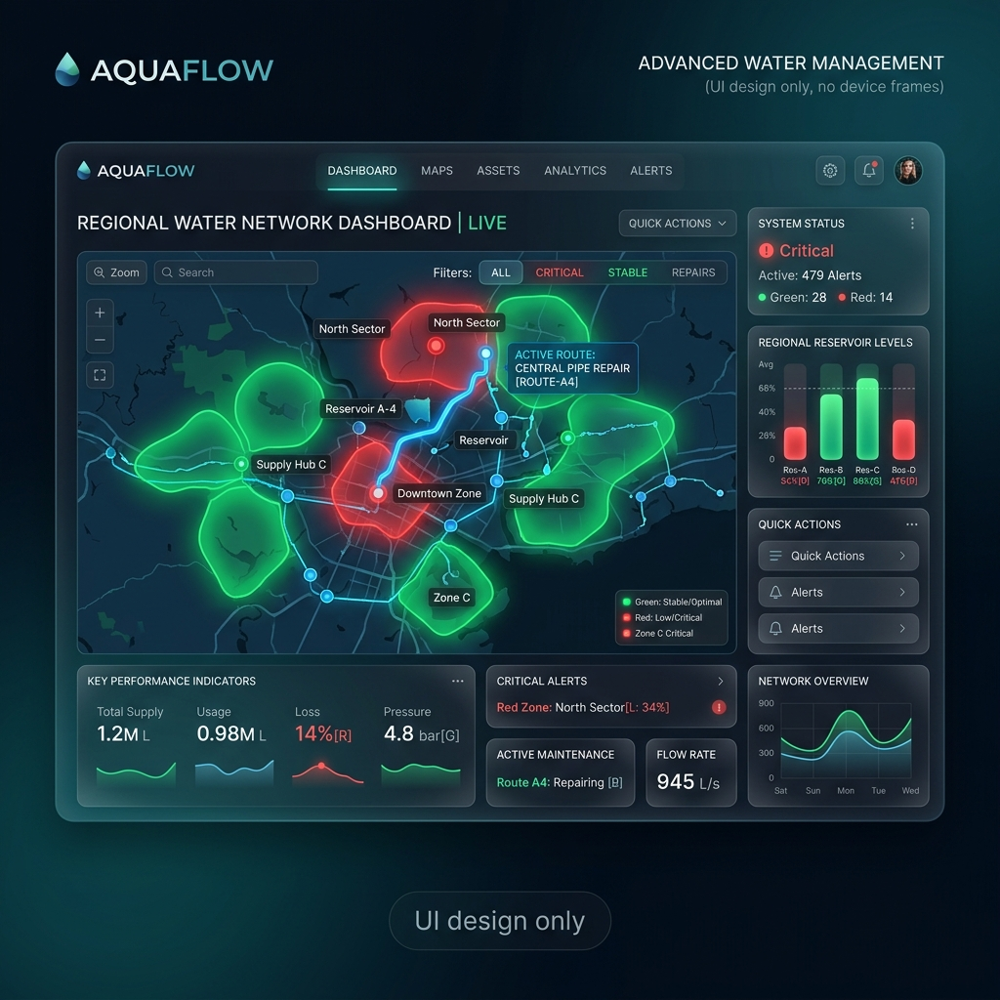

JalSanjeevani (जलसंजीवनी) is an end-to-end intelligent platform that predicts regional water scarcity, stops tanker diversion via cryptographic validation, and optimizes delivery routes to ensure equitable access for both humans and livestock.

Using open geospatial telemetry (ESA Copernicus & NASA SMAP), we compute a localized Water Depletion Index. Predict village groundwater failure up to 14 days in advance, moving from reactive to proactive relief.
Eliminate the Tanker Mafia. A dual-key offline-first cryptographic QR handshake at geofenced community cisterns ensures water is delivered to the people, not sold to private commercial entities.
Mathematical fair-share distribution routing using Google OR-Tools. Guarantees a minimum statutory quota of 40L/day for humans and 70L/day for cattle, minimizing diesel burn and eliminating skipped hamlets.